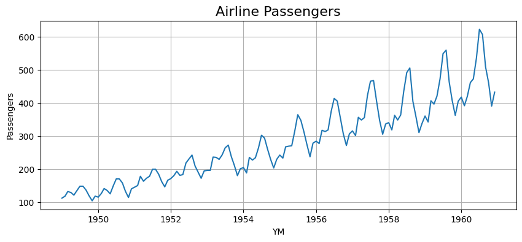
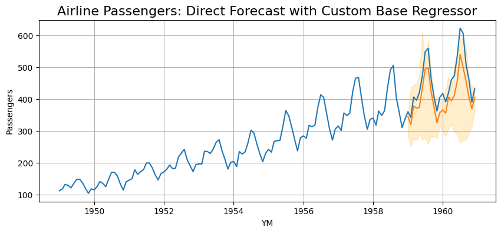

Using a Custom Base Regressor
In this example, we will use a custom base regressor with the direct forecasting class on the airline passengers dataset. An XGBoost regressor will be used as it natively supports quantile regression. However, the custom base regressor class could easily be adapted to work with any algorithm that can support quantile regression (i.e. pinball loss). This could include neural networks (pytorch or tensorflow), linear regression, or a number of other model types.
Data Preparation
# imports
from clustercast.datasets import load_airline_passengers
from clustercast import DirectForecaster, RecursiveForecaster
# load airline passenger data
airline_data = load_airline_passengers()
airline_data['ID'] = 1
print(airline_data)
# only keep data before 1959 for training
airline_data_train = airline_data.loc[
airline_data['YM'] < dt.datetime(year=1959, month=1, day=1)
]
YM Passengers ID
0 1949-01-01 112 1
1 1949-02-01 118 1
2 1949-03-01 132 1
3 1949-04-01 129 1
4 1949-05-01 121 1
.. ... ... ..
139 1960-08-01 606 1
140 1960-09-01 508 1
141 1960-10-01 461 1
142 1960-11-01 390 1
143 1960-12-01 432 1
[144 rows x 3 columns]
# plot the airline data
fig, ax = plt.subplots(figsize=(10, 4));
sns.lineplot(data=airline_data, x='YM', y='Passengers', ax=ax);
ax.grid(axis='both');
ax.set_title('Airline Passengers', fontsize=16);

Create a Custom Base Regressor
In this step, we create a custom regressor class that has the following properties:
- An "alpha" argument during instantiation that defines the quantile for prediction (defaults at 0.50, equivalent to Mean Absolute Error)
- A standard Scikit-Learn compatible fit method
- A standard Scikit-Learn compatible predict method
This class is essentially a wrapper around XGBRegressor that allows us to pass the quantile regression parameters through the instantiation arguments.
It is apparent that this class could be modified to support essentially any ML algorithm.
# creating a wrapper for custom base regressor using XGBoost
class CustomRegressor():
# provide the quantile as an argument ("alpha") when instantiating
def __init__(self, alpha=0.5):
# create a custom XGBoost regressor using pinball loss with a specified quantile
self.regressor = XGBRegressor(
objective='reg:quantileerror',
quantile_alpha=alpha, # uses the "alpha" from class instantiation
n_estimators=300,
max_depth=8,
learning_rate=0.05,
reg_lambda=0.05
)
# standard Scikit-Learn fit method
def fit(self, X, y):
self.regressor.fit(X, y)
return self
# standard Scikit-Learn predict method
def predict(self, X, y=None):
return self.regressor.predict(X)
Direct Forecaster
Now, let's create a direct forecaster with our custom base regressor class.
The parameters of the DirectForecaster are similar to the other examples, with the exception that we pass our
CustomRegressor class to the base_regressor argument when we create the model.
# define the model
model = DirectForecaster(
data=airline_data_train,
endog_var='Passengers',
id_var='ID',
timestep_var='YM',
group_vars=[],
exog_vars=[],
boxcox=0,
differencing=True,
lags=12,
seasonality_ordinal=[12],
base_regressor=CustomRegressor # pass the CustomRegressor class created earlier
)
# fit the model with a 90% prediction interval
# 24 lookahead models, and automatically calculates CQR calibration set size
model.fit(max_steps=24, alpha=0.10, cqr_cal_size='auto')
# make predictions out to 2 years ahead
direct_preds = model.predict(steps=24)
# display some predictions
print(direct_preds.head())
ID YM Forecast Forecast_0.050 Forecast_0.950
0 1 1959-01-01 344.578409 282.426612 355.635304
1 1 1959-02-01 319.566975 251.435909 438.184587
2 1 1959-03-01 378.031777 275.022579 442.401312
3 1 1959-04-01 370.820691 270.167072 448.559809
4 1 1959-05-01 373.634456 289.659967 476.273913
# display the predictions, including the prediction intervals
fig, ax = plt.subplots(figsize=(10, 4));
sns.lineplot(data=airline_data, x='YM', y='Passengers', ax=ax);
sns.lineplot(data=direct_preds, x='YM', y='Forecast', ax=ax);
ax.grid(axis='both');
ax.set_title('Airline Passengers: Direct Forecast', fontsize=16);
ax.fill_between(x=direct_preds['YM'], y1=direct_preds.iloc[:, -2], y2=direct_preds.iloc[:, -1], alpha=0.2, color='orange');
